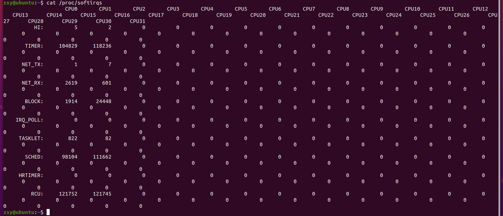
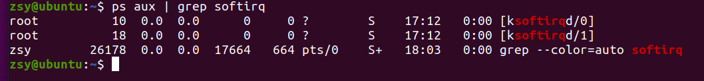

软中断（softirq）
软中断（softirq）CPU 使用率升高也是最常见的一种性能问题
中断其实是一种异步的事件处理机制，可以提高系统的并发处理能力。
为了减少对正常进程运行调度的影响，中断处理程序就需要尽可能快地运行。
Linux 将中断处理过程分成了两个阶段，也就是上半部和下半部：
- 上半部用来快速处理中断，它在中断禁止模式下运行，主要处理跟硬件紧密相关的或时间敏感的工作。
- 下半部用来延迟处理上半部未完成的工作，通常以内核线程的方式运行。
网卡接收到数据包后，会通过硬件中断的方式，通知内核有新的数据到了。
这两个阶段你也可以这样理解：
- 上半部直接处理硬件请求，也就是我们常说的硬中断，特点是快速执行；
- 而下半部则是由内核触发，也就是我们常说的软中断，特点是延迟执行。
查看软中断和内核线程
- /proc/softirqs 提供了软中断的运行情况；
- /proc/interrupts 提供了硬中断的运行情况。

在查看 /proc/softirqs 文件内容时，你要特别注意以下这两点。
- 第一，要注意软中断的类型，也就是这个界面中第一列的内容。从第一列你可以看到，软中断包括了 10 个类别，分别对应不同的工作类型。比如 NET_RX 表示网络接收中断，而 NET_TX 表示网络发送中断。
- 第二，要注意同一种软中断在不同 CPU 上的分布情况，也就是同一行的内容。正常情况下，同一种中断在不同 CPU 上的累积次数应该差不多。比如这个界面中，NET_RX 在 CPU0 和 CPU1 上的中断次数基本是同一个数量级，相差不大。
